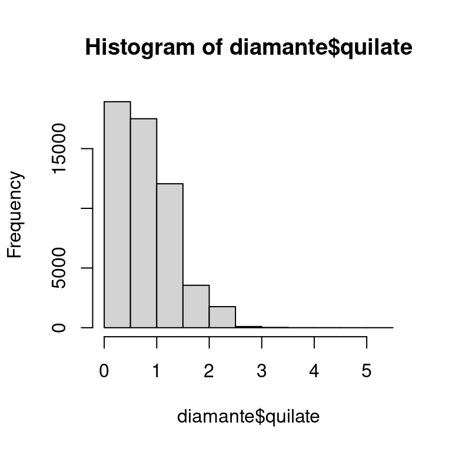
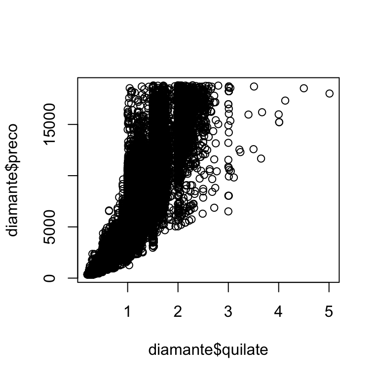

27 Um guia para o R base
27.1 Introdução
Para finalizar a seção de programação, faremos uma passagem rápida pelas funções mais importantes do R base que não discutimos de outra forma no livro. Essas ferramentas são particularmente úteis à medida que você programa mais e ajudarão a ler código R que encontrará por aí.
Este é um bom lugar para lembrar que o tidyverse não é a única maneira de resolver problemas de ciência de dados. Ensinamos o tidyverse neste livro porque os pacotes tidyverse compartilham uma filosofia de design comum, aumentando a consistência entre funções e tornando cada nova função ou pacote um pouco mais fácil de aprender e usar. Não é possível usar o tidyverse sem usar o R base, então na verdade já ensinamos a você muitas funções do R base: de library() para carregar pacotes, até sum() e mean () para sumarizações numéricas, e até fatores, data e POSIXct e, claro, todos os operadores básicos como +, -, /, *, |, &, e !. O que não focamos até agora são os fluxos de trabalho do R base, por isso destacaremos alguns deles neste capítulo.
Depois de ler este livro, você aprenderá outras abordagens para os mesmos problemas usando o R base, data.table e outros pacotes. Sem dúvida, você encontrará essas outras abordagens quando começar a ler o código R escrito por outras pessoas, principalmente se estiver usando o StackOverflow. É 100% correto escrever código que use uma combinação de abordagens. Não deixe ninguém lhe dizer o contrário!
Neste capítulo, vamos nos concentrar em quatro grandes tópicos: subconjuntos com [, subconjuntos com [[ e $, a família de funções apply e laços (loops) for. Para finalizar, discutiremos brevemente duas funções essenciais para criação de gráficos.
27.1.1 Pré-requisitos
Este capítulo se concentra no R base, portanto não possui nenhum pré-requisito real, mas carregaremos o tidyverse para explicar algumas das diferenças e o pacote dados para o conjunto de dados diamante.
27.2 Selecionando múltiplos elementos com [
[ é usado para extrair subcomponentes de vetores e data frames e é usado como x[i] ou x[i, j]. Nesta seção, apresentaremos o poder de [, primeiro mostrando como você pode usá-lo com vetores e, em seguida, como os mesmos princípios se estendem de maneira direta a estruturas bidimensionais (2d), como data frames. Em seguida, ajudaremos você a consolidar esse conhecimento, mostrando como vários verbos do pacote dplyr são casos especiais de [.
27.2.1 Subconjuntos de vetores
Existem cinco tipos principais de coisas com as quais você pode criar subconjuntos de um vetor, ou seja, que podem ser o i em x[i]:
-
Um vetor de inteiros positivos. Extrair um subconjunto com inteiros positivos obtém os elementos dessas posições:
Ao repetir uma posição, você pode realmente produzir uma saída mais longa do que a entrada, tornando o termo “subconjunto” um pouco impróprio.
x[c(1, 1, 5, 5, 5, 2)] #> [1] "um" "um" "cinco" "cinco" "cinco" "dois" -
Um vetor de inteiros negativos. Valores negativos descartam os elementos nas posições especificadas:
x[c(-1, -3, -5)] #> [1] "dois" "quatro" -
Um vetor lógico. Extrair usando um vetor lógico obtém todos os valores correspondentes a um valor verdadeiro
TRUE. Isto é mais útil em conjunto com funções de comparação.Ao contrário de
filter(), os índicesNAserão incluídos na saída comoNAs. -
Um vetor de caracteres. Se você tiver um vetor nomeado, poderá extrair um subconjunto com um vetor de caracteres:
Tal como acontece com o subconjunto com números inteiros positivos, você pode usar um vetor de caracteres para duplicar entradas individuais.
Vazio. O tipo final de subconjunto é vazio (nothing),
x[], que retorna oxcompleto. Isso não é útil para subconjuntos de vetores, mas como veremos em breve, é útil para subconjuntos de estruturas 2d como tibbles.
27.2.2 Subconjuntos de data frames
Existem algumas maneiras diferentes[^base-r-1] de usar [ com uma tabela de dados, mas a maneira mais importante é selecionar linhas e colunas independentemente com df[linhas, colunas]. Aqui linhas e colunas são vetores conforme descrito acima. Por exemplo, df[linhas, ] e df[, colunas] selecionam apenas linhas ou apenas colunas, usando o subconjunto vazio para preservar a outra dimensão.
Leia https://adv-r.hadley.nz/subsetting.html#subset-multiple para ver como você também pode criar subconjuntos de um data frame como se fosse um objeto 1d e como você pode subdefini-lo com uma matriz
Aqui estão alguns exemplos:
df <- tibble(
x = 1:3,
y = c("a", "e", "f"),
z = runif(3)
)
# Seleciona a primeira linha e a segunda coluna
df[1, 2]
#> # A tibble: 1 × 1
#> y
#> <chr>
#> 1 a
# Selecione todas as linhas das colunas x e y
df[, c("x" , "y")]
#> # A tibble: 3 × 2
#> x y
#> <int> <chr>
#> 1 1 a
#> 2 2 e
#> 3 3 f
# Selecione linhas em que `x` é maior que 1 e todas as colunas
df[df$x > 1, ]
#> # A tibble: 2 × 3
#> x y z
#> <int> <chr> <dbl>
#> 1 2 e 0.834
#> 2 3 f 0.601Voltaremos a $ em breve, mas você deve ser capaz de adivinhar o que df$x faz a partir do contexto: ele extrai a variável x de df. Precisamos usá-lo aqui porque [ não usa avaliação tidy, então você precisa ser explícito sobre a origem da variável x.
Há uma diferença importante entre tibbles e data frames quando se trata de [. Neste livro, usamos principalmente tibbles, que são tabelas de dados, mas eles ajustam alguns comportamentos para tornar sua vida um pouco mais fácil. Na maioria dos lugares, você pode usar “tibble” e “data frame” de forma intercambiável, então quando quisermos chamar atenção especial para o data frame integrado do R base, escreveremos data.frame. Se df for um data.frame, então df[, colunas] retornará um vetor se colunas selecionar uma única coluna e um data frame se selecionar mais de uma coluna. Se df for um tibble, então [ sempre retornará um tibble.
df1 <- data.frame(x = 1:3)
df1[, "x"]
#> [1] 1 2 3
df2 <- tibble(x = 1:3)
df2[, "x"]
#> # A tibble: 3 × 1
#> x
#> <int>
#> 1 1
#> 2 2
#> 3 3Uma maneira de evitar essa ambiguidade com data.frames é especificar explicitamente drop = FALSE:
df1[, "x" , drop = FALSE]
#> x
#> 1 1
#> 2 2
#> 3 327.2.3 Equivalências do dplyr
Vários verbos dplyr são casos especiais de [:
-
filter()é equivalente a fazer um subconjunto das linhas com um vetor lógico, tomando cuidado para excluir valores ausentes:Outra técnica comum é usar
which()por seu efeito colateral de eliminar valores ausentes:df[which(df$x > 1), ]. -
arrange()é equivalente a fazer um subconjunto das linhas com um vetor inteiro, geralmente criado comorder():Você pode usar
order(decreasing = TRUE)para classificar todas as colunas em ordem decrescente ou-rank(col)para classificar colunas em ordem decrescente individualmente. -
Ambos
select()erelocate()são semelhantes a fazer subconjuntos das colunas com um vetor de caracteres:
O R base também fornece uma função que combina as características de filter() e select()1 chamada subset():
Esta função foi a inspiração para grande parte da sintaxe do dplyr.
27.2.4 Exercícios
-
Crie funções que recebam um vetor como entrada e retornem:
- Os elementos em posições pares.
- Cada elemento, exceto o último valor.
- Somente valores pares (e nenhum valor ausente).
Por que
x[-which(x > 0)]não é o mesmo quex[x <= 0]? Leia a documentação dewhich()e faça alguns experimentos para descobrir..
27.3 Selecionando um único elemento com $ e [[
[, que seleciona muitos elementos, é similar a [[ e $, que extraem um único elemento. Nesta seção, mostraremos como usar [[ e $ para extrair colunas de data frames, discutiremos mais algumas diferenças entre data.frames e tibbles e enfatizaremos algumas diferenças importantes entre [ e [[ quando usado com listas.
27.3.1 Data frames
[[ e $ podem ser usados para extrair colunas de um data frame. [[ pode acessar por posição ou por nome, e $ é especializado para acesso por nome:
Eles também podem ser usados para criar novas colunas, o equivalente em R base a mutate():
tb$z <- tb$x + tb$y
tb
#> # A tibble: 4 × 3
#> x y z
#> <int> <dbl> <dbl>
#> 1 1 10 11
#> 2 2 4 6
#> 3 3 1 4
#> 4 4 21 25Existem várias outras abordagens do R base para criar novas colunas, incluindo transform(), with() e within(). Hadley coletou alguns exemplos em https://gist.github.com/hadley/1986a273e384fb2d4d752c18ed71bedf.
Usar $ diretamente é conveniente ao realizar resumos rápidos. Por exemplo, se você deseja apenas encontrar o tamanho do maior diamante ou os possíveis valores de corte, não há necessidade de usar summarize():
dplyr também fornece um equivalente a [[/$ que não mencionamos no Capítulo 3: pull(). pull() pega um nome de variável ou uma posição de variável e retorna apenas a coluna correspondente. Isso significa que poderíamos reescrever o código acima para usar o pipe:
27.3.2 Tibbles
Existem algumas diferenças importantes entre tibbles e data.frames quando se trata de $. Os *data frames acessam o prefixo de qualquer nome de variável (chamado de correspondência parcial** ou partial matching) e reclamam se uma coluna não existir:
df <- data.frame(x1 = 1)
df$x
#> [1] 1
df$z
#> NULLTibbles são mais rigorosos: eles apenas retornam os nomes das variáveis exatos e gerarão um aviso se a coluna que você está tentando acessar não existir:
tb <- tibble(x1 = 1)
tb$x
#> Warning: Unknown or uninitialised column: `x`.
#> NULL
tb$z
#> Warning: Unknown or uninitialised column: `z`.
#> NULLPor esta razão, às vezes brincamos que os tibbles são preguiçosos e grosseiros: fazem menos e reclamam mais.
27.3.3 Listas
[[ e $ também são muito importantes para trabalhar com listas, e é importante entender como eles diferem de [. Vamos ilustrar as diferenças com uma lista chamada l:
-
[extrai uma sublista. Não importa quantos elementos você extraia, o resultado sempre será uma lista.Assim como acontece com os vetores, você pode extrair um subconjunto com um vetor lógico, inteiro ou de caracteres.
-
[[e$extraem um único componente de uma lista. Eles removem um nível de hierarquia da lista.
A diferença entre [ e [[ é particularmente importante para listas porque [[ acessa um elemento da lista enquanto [ retorna uma lista nova e menor. Para te ajudar a lembrar a diferença, dê uma olhada no pimenteiro incomum mostrado na Figura 27.1. Se este pimenteiro for sua lista pimenteiro, então pimenteiro[1] é um pimenteiro contendo um único pacote de pimenta. pimenteiro[2] teria a mesma aparência, mas conteria o segundo pacote. pimenteiro[1:2] seria um pimenteiro contendo dois pacotes de pimenta. pimenteiro[[1]] extrairia o próprio pacote de pimenta.

pimenteiro[1]. (Direita) pimenteiro[[1]]
Este mesmo princípio se aplica quando você usa 1d [ com um data frame: df["x"] retorna um data frame de uma coluna e df[["x"]] retorna um vetor.
27.3.4 Exercícios
O que acontece quando você usa
[[com um número inteiro positivo maior que o tamanho do vetor? O que acontece quando você cria um subconjunto com um nome que não existe?O que seria
pimenteiro[[1]][1]? E quanto apimenteiro[[1]][[1]]?
27.4 A família Apply
No Capítulo 26, você aprendeu técnicas do tidyverse para iteração como dplyr::across() e a família de funções map. Nesta seção, você aprenderá sobre seus equivalentes básicos, a família apply. Neste contexto, apply (aplicar) e map (mapear) são sinônimos porque outra maneira de dizer “mapear uma função sobre cada elemento de um vetor” é “aplicar uma função sobre cada elemento de um vetor”. Aqui lhe daremos uma rápida visão geral desta família de funções para que você possa reconhecê-la por aí.
O membro mais importante desta família é lapply(), que é muito semelhante a purrr::map()2. Na verdade, como não usamos nenhum dos recursos mais avançados de map(), você pode substituir cada chamada de map() na Capítulo 26 por lapply().
Não existe no R base um função exatamente equivalente a across(), mas você pode chegar perto usando [ com lapply(). Isso funciona porque, nos bastidores, os data frames são listas de colunas, portanto, chamar lapply() em um data frame aplica a função a cada coluna.
df <- tibble(a = 1, b = 2, c = "a", d = "b", e = 4)
# Encontre a primeira coluna numérica
coluna_numerica <- sapply(df, is.numeric)
coluna_numerica
#> a b c d e
#> TRUE TRUE FALSE FALSE TRUE
# Em seguida, transforme cada coluna com lapply() e substitua os valores originais
df[, coluna_numerica] <- lapply(df[, coluna_numerica, drop = FALSE], \(x) x * 2)
df
#> # A tibble: 1 × 5
#> a b c d e
#> <dbl> <dbl> <chr> <chr> <dbl>
#> 1 2 4 a b 8O código acima usa uma nova função, sapply(). É semelhante a lapply() mas sempre tenta simplificar o resultado, daí o s em seu nome, produzindo aqui um vetor lógico em vez de uma lista. Não recomendamos usá-lo para programação, porque a simplificação pode falhar e fornecer um tipo inesperado, mas geralmente é adequado para uso interativo. purrr tem uma função semelhante chamada map_vec() que não mencionamos no Capítulo 26.
O R base fornece uma versão mais estrita de sapply() chamada vapply(), abreviação de vector apply. É necessário um argumento adicional que especifica o tipo esperado, garantindo que a simplificação ocorra da mesma forma, independentemente da entrada. Por exemplo, poderíamos substituir a chamada sapply() acima por vapply() onde especificamos que esperamos que is.numeric() retorne um vetor lógico de tamanho 1:
A distinção entre sapply() e vapply() é muito importante quando eles estão dentro de uma função (porque faz uma grande diferença na robustez da função para entradas incomuns), mas geralmente não importa na análise de dados.
Outro membro importante da família apply é tapply() que calcula um único resumo agrupado (grouped summary):
diamante |>
group_by(corte) |>
summarize(preco = mean(preco))
#> # A tibble: 5 × 2
#> corte preco
#> <ord> <dbl>
#> 1 Justo 4359.
#> 2 Bom 3929.
#> 3 Muito Bom 3982.
#> 4 Premium 4584.
#> 5 Ideal 3458.
tapply(diamante$preco, diamante$corte, mean)
#> Justo Bom Muito Bom Premium Ideal
#> 4358.758 3928.864 3981.760 4584.258 3457.542Infelizmente tapply() retorna seus resultados em um vetor nomeado que requer alguma ginástica se você quiser coletar múltiplos resumos e agrupar variáveis em um data frame (é certamente possível não fazer isso e apenas trabalhar com vetores livres, mas em nossa experiência isso apenas atrasa o trabalho). Se você quiser ver como pode usar tapply() ou outras técnicas básicas para realizar outros resumos agrupados, Hadley reuniu algumas técnicas neste resumo.
O membro final da família apply é o titular apply(), que trabalha com matrizes e arrays. Em particular, tome cuidado com apply(df, 2, alguma_coisa), que é uma forma lenta e potencialmente perigosa de fazer lapply(df, alguma_coisa). Isso raramente aparece na ciência de dados porque geralmente trabalhamos com tabelas de dados e não com matrizes.
27.5 Loops for
Loops for são o alicerce fundamental da iteração que as famílias apply e map usam nos bastidores. Os loops for são ferramentas poderosas e gerais que são importantes para aprender à medida que você se torna um programador R mais experiente. A estrutura básica de um loop for é semelhante a esta:
for (elemento in vetor) {
# faça algo com elemento
}O uso mais direto dos loops for é obter o mesmo efeito que walk(): chamar alguma função que atuará em cada elemento de uma lista. Por exemplo, na Seção 26.4.1 em vez de usar walk():
caminhos |> walk(anexar_arquivo)Poderíamos ter usado um loop for:
for (caminho in caminhos) {
anexar_arquivo(path)
}As coisas ficam um pouco mais complicadas se você quiser salvar a saída do loop for, por exemplo, lendo todos os arquivos Excel em um diretório como fizemos na Capítulo 26:
caminhos <- dir("data/gapminder", pattern = "\\.xlsx$", full.names = TRUE)
arquivos <- map(caminhos, readxl::read_excel)Existem algumas técnicas diferentes que você pode usar, mas recomendamos ser explícito sobre como será o resultado desde o início. Neste caso, vamos querer uma lista do mesmo comprimento que caminhos, que podemos criar com vector():
Então, em vez de iterar sobre os elementos de caminhos, iremos iterar sobre seus índices, usando seq_along() para gerar um índice para cada elemento de paths:
seq_along(caminhos)
#> [1] 1 2 3 4 5 6 7 8 9 10 11 12Usar os índices é importante porque nos permite vincular cada posição na entrada com a posição correspondente na saída:
for (i in seq_along(caminhos)) {
arquivos[[i]] <- readxl::read_excel(caminhos[[i]])
}Para combinar a lista de tibbles em um único tibble você pode usar do.call() + rbind():
do.call(rbind, arquivos)
#> # A tibble: 1,704 × 5
#> country continent lifeExp pop gdpPercap
#> <chr> <chr> <dbl> <dbl> <dbl>
#> 1 Afghanistan Asia 28.8 8425333 779.
#> 2 Albania Europe 55.2 1282697 1601.
#> 3 Algeria Africa 43.1 9279525 2449.
#> 4 Angola Africa 30.0 4232095 3521.
#> 5 Argentina Americas 62.5 17876956 5911.
#> 6 Australia Oceania 69.1 8691212 10040.
#> # ℹ 1,698 more rowsEm vez de fazer uma lista e salvar os resultados à medida que avançamos, uma abordagem mais simples é construir o data frame parte por parte:
saida <- NULL
for (caminho in caminhos) {
saida <- rbind(saida, readxl::read_excel(caminho))
}Recomendamos evitar esse padrão porque ele pode ficar muito lento quando o vetor é muito longo. Esta é a fonte do boato persistente de que os loops for são lentos: eles não são, mas o crescimento iterativo de um vetor é.
27.6 Gráficos
Muitos usuários de R que não usam o tidyverse preferem ggplot2 para criação de gráficos devido a recursos úteis como padrões sensatos, legendas automáticas e uma aparência moderna. No entanto, as funções gráficas do R base ainda podem ser úteis porque são muito concisas – é preciso muito pouca digitação para fazer um gráfico exploratório básico.
Existem dois tipos principais de gráficos básicos que você verá: gráficos de dispersão e histogramas, produzidos com plot() e hist() respectivamente. Aqui está um exemplo rápido do conjunto de dados diamante do pacote dados:


Observe que as funções gráficas básicas funcionam com vetores, então você precisa extrair colunas do data frame usando $ ou alguma outra técnica.
27.7 Resumo
Neste capítulo mostramos uma seleção de funções do R base úteis para subconjuntos e iterações. Em comparação com as abordagens discutidas em outras partes do livro, essas funções tendem a ter mais um sabor de “vetor” do que de “data frames”, porque as funções do R base tendem a usar vetores individuais, em vez de um data frame e alguma especificação de coluna. Isso geralmente facilita a vida da programação e se torna mais importante à medida que você escreve mais funções e começa a escrever seus próprios pacotes.
Este capítulo conclui a seção de programação do livro. Você teve um início sólido em sua jornada para se tornar não apenas um cientista de dados que usa R, mas um cientista de dados que pode programar em R. Esperamos que esses capítulos tenham despertado seu interesse em programação e que você esteja com bastante de empolgação para aprender mais fora deste livro.
Mas ele não lida com data frames agrupados (grouped) de maneira diferenciada e não suporta funções auxiliares de seleção como
starts_with().↩︎Faltam apenas recursos convenientes, como barras de progresso e relatórios de qual elemento causou o problema se houver um erro.↩︎